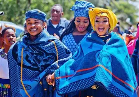
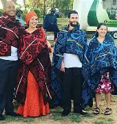
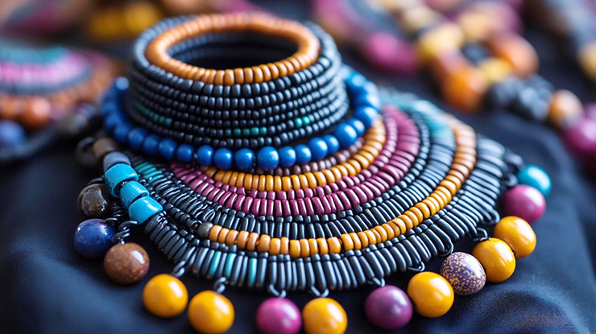

The Seanamarena blanket is the most iconic piece of Basotho men’s traditional clothing. This thick woolen blanket is worn over the shoulders and serves both as protection from Lesotho’s cold climate and as a symbol of status, respect, and cultural pride.
READ MOREWomen usually wear long dresses and skirts in vibrant colors and patterns with blankets around their waists, and for special occasions (like church or weddings) they wear a traditional Basotho dress called the seshoeshoe. Seshoeshoe are worn in endless varieties of designs, patterns and colours.
READ MORETraditionally young girls would be dressed in a neckpiece made out of clay beads known as sefaha sa letsopa and a dress made out of clay beads known as thethana ea banana. Following the coming of age, a skirt would be made out of woven fibre or a cow skin skirt known as mose oa lekoko.
READ MOREA mokorotlo is a type of straw hat widely used for traditional Sotho clothing, and is the national symbol of Lesotho and the national symbol of the Basotho and Lesotho people.
READ MORETraditional beadwork holds spiritual and cultural significance among Basotho women. Necklaces and waist beads are often handmade, using color-coded patterns to represent life stages, fertility, or clan heritage. These accessories are worn during dance rituals and community ceremonies.
READ MOREBasotho men traditionally wear lieta tsa letlalo, handcrafted leather sandals made from cowhide. Durable and suited for rugged terrain, they reflect the practical lifestyle of highland dwellers. Worn with traditional blankets or during herding, these sandals offer both utility and traditional authenticity. Their construction remains largely unchanged, preserving ancient craftsmanship.
READ MOREOften worn during mourning periods or in remembrance ceremonies, the kobo e ntšo is a plain black cloth wrapped around the shoulders. Unlike the colorful and symbolic blankets, this item reflects solemnity and respect. It plays an essential role in funerary customs and ancestral commemorations. Its simplicity conveys a powerful cultural message in Basotho tradition.
READ MORE